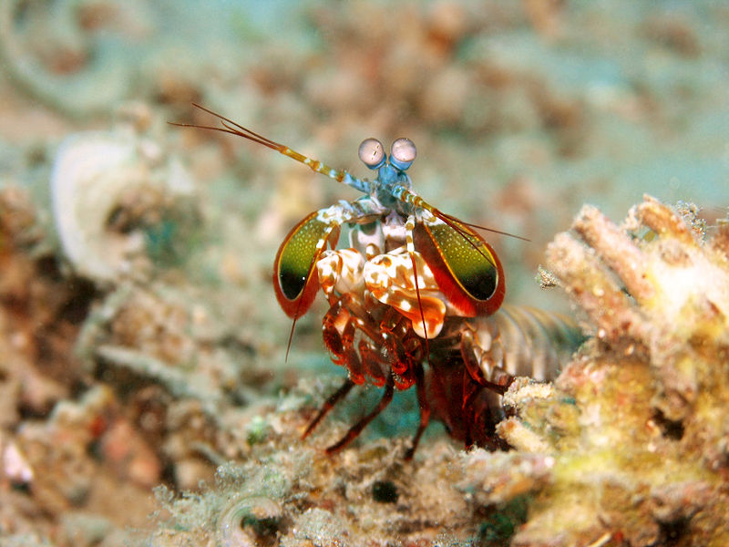

Fatos sobre o Stomatopoda

Classificação Científica
| Nome Científico | Reino | Filo | Subfilo | Classe | Subclasse | Ordem |
| Odontodactylus scyllarus. | Animalia | Arthropoda | Crustacea | Malacostraca | Hoplocarida | Stomatopoda |
O soco com o poder de um tiro
Excelente golpeador, o tamarutaca "soca" suas presas com suas garras com uma força de até 2,5 mil vezes seu peso em menos de 800 microsegundos. Este nocaute equivale a um tiro de pistola calibre 22.

A visão que o Leonardo da Vinci tem inveja
Como se não bastasse, estes crustáceos apresentam a melhor visão em cores do mundo. Possuindo 08 fotorreceptores para distinção de cores (humanos possuem 03), conseguem detectar ondas ultravioleta e milhares de gradações (até 16 cores primárias). Com um mecanismo de polarização visual complexo e visão em 360 graus, são capazes de determinar profundidade e localização de objetos em três ângulos. Este fenômeno inspira pesquisadores para o desenvolvimento e aprimoramento de recursos fotográficos e audiovisuais como os DVDs.

Não tente domesticá-los
São animais perigosos de se manter em aquários pois os seus murros são capazes de partir o vidro . Mas devido à sua coloração são espécimens bonitos para se ter em colecções ou como animais de estimação. Outra desvantagem é o facto de serem predadores vorazes que podem alimentar-se doutros animais presentes no tanque ou capazes de danificar os objectos e o coral dentro do aquário.
